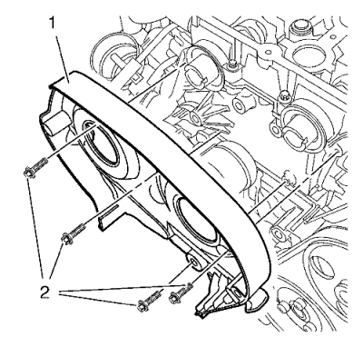

Montaje de la tapa trasera de la correa de distribución
Herramientas especiales
EN-45059 Kit de goniómetro de par de apriete
Si desea informarse sobre herramientas regionales equivalentes, consultar Herramientas especiales .
- Limpie las 4 roscas de la cubierta trasera de la correa de distribución.
- Aplique masilla de fijación de tueras en los 4 NUEVOS pernos de cubierta trasera de correa de distribución. Consulte en Adhesivos, líquidos, lubricantes y selladores el material sellarroscas recomendado.

- Monte la cubierta trasera (1) de la correa de distribución.
Atención: Consulte Precaución con las fijaciones en la sección Prólogo
- Monte los 4 tornillos de la tapa trasera de la correa de distribución (2) y apriételos a 6 N·m (53 lib. pulg.)

Nota: Se necesitan dos mecánicos.
- Monte el regulador del árbol de levas (3) y los tornillos (2) del regulador del árbol de levas y apriete los tornillos en tres pasos usando el kit EN-45059.
Sujete en el hexágono adecuado del árbol de levas.
| 5.1. | Primer paso, apriételos a 65 N·m (48 lib. pie) |
| 5.2. | Segundo paso a 120 grados |
| 5.3. | Tercer paso a 15 grados |
- Monte los 2 tapones del regulador del árbol de levas (1) y apriételos a 30 N·m (22 lib. pie).
| © Copyright Chevrolet Europe. All rights reserved |